3. Matplotlib#
3.1. Overview#
ഈ lectures-ൽ Matplotlib ഉപയോഗിച്ച് നമ്മൾ already ധാരാളം figures generate ചെയ്തിട്ടുണ്ട്.
Matplotlib scientific computing-നായി design ചെയ്ത ഒരു മികച്ച graphics library ആണ്. ഇതിൽ ഉള്ളത്:
high-quality 2D and 3D plots
സാധാരണ formats-ലെല്ലാം (PDF, PNG, etc.) output
LaTeX integration
presentation-ന്റെ എല്ലാ വശങ്ങളിലും fine-grained control
animation, etc.
3.1.1. Matplotlib's Split Personality#
Matplotlib-ന്റെ ഒരു പ്രത്യേകത, plotting-നായി അത് രണ്ട് വ്യത്യസ്ത interfaces provide ചെയ്യുന്നു എന്നതാണ്.
ഒന്ന്, MATLAB refugees-ന് എളുപ്പം home ആയി തോന്താൻ എഴുതിയ ലളിതമായ ഒരു MATLAB-style API (Application Programming Interface) ആണ്.
മറ്റൊന്ന്, കൂടുതൽ "Pythonic" ആയ object-oriented API ആണ്.
താഴെ പറയുന്ന കാരണങ്ങളാൽ, രണ്ടാമത്തെ API ഉപയോഗിക്കാൻ ഞങ്ങൾ recommend ചെയ്യുന്നു.
പക്ഷേ ആദ്യം, ഇവ തമ്മിലുള്ള വ്യത്യാസം നമുക്ക് നോക്കാം.
3.2. The APIs#
3.2.1. The MATLAB-style API#
Introductory treatments-ൽ കാണാവുന്ന തരത്തിലുള്ള എളുപ്പമായ ഒരു example താഴെ കാണാം:
import matplotlib.pyplot as plt
import numpy as np
x = np.linspace(0, 10, 200)
y = np.sin(x)
plt.plot(x, y, 'b-', linewidth=2)
plt.show()
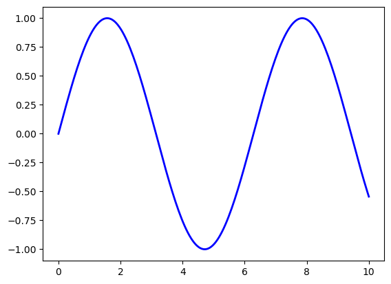
ഇത് simple-ഉം convenient-ഉം ആണ്, പക്ഷേ ചില പരിമിതികളുണ്ട്, കൂടാതെ un-Pythonic ആണ്.
For example, ഈ function calls-ൽ, programmer-ന് അറിയാതെ തന്നെ ധാരാളം objects create ചെയ്യപ്പെടുകയും pass ചെയ്യപ്പെടുകയും ചെയ്യുന്നു.
Python programmers കൂടുതൽ explicit ആയ ഒരു programming style ആണ് പൊതുവെ prefer ചെയ്യുന്നത് (ഒരു code block-ൽ import this run ചെയ്ത് രണ്ടാമത്തെ line നോക്കുക).
ഇത് നമ്മളെ alternative ആയ, object-oriented Matplotlib API-യിലേക്ക് എത്തിക്കുന്നു.
3.2.2. The Object-Oriented API#
Object-oriented API ഉപയോഗിച്ച് മുൻപത്തെ figure-ന് സമാനമായ code താഴെ കാണാം:
fig, ax = plt.subplots()
ax.plot(x, y, 'b-', linewidth=2)
plt.show()
ഇവിടെ fig, ax = plt.subplots() എന്ന call ഒരു pair return ചെയ്യുന്നു. അതിൽ:
figഒരുFigureinstance ആണ്---ഒരു blank canvas പോലെ.axഒരുAxesSubplotinstance ആണ്---plotting ചെയ്യാനുള്ള ഒരു frame ആയി കരുതുക.
plot() function യഥാർത്ഥത്തിൽ ax-ന്റെ ഒരു method ആണ്.
കുറച്ചുകൂടി typing വേണ്ടിവരുമെങ്കിലും, objects-ന്റെ കൂടുതൽ explicit ആയ ഉപയോഗം നമുക്ക് മെച്ചപ്പെട്ട control നൽകുന്നു.
നമ്മൾ മുന്നോട്ട് പോകുമ്പോൾ ഇത് കൂടുതൽ വ്യക്തമാകും.
3.2.3. Tweaks#
ഇവിടെ line-ന്റെ നിറം red ആക്കി മാറ്റുകയും ഒരു legend ചേർക്കുകയും ചെയ്തിരിക്കുന്നു:
fig, ax = plt.subplots()
ax.plot(x, y, 'r-', linewidth=2, label='sine function', alpha=0.6)
ax.legend()
plt.show()
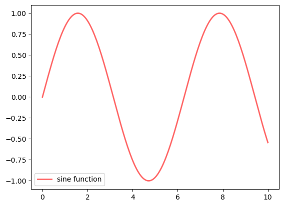
Line-നെ അല്പം transparent ആക്കാൻ alpha ഉപയോഗിച്ചു---ഇത് കാഴ്ചയിൽ കൂടുതൽ smooth ആയി തോന്നിക്കും.
ax.legend()-ന് പകരം ax.legend(loc='upper center') ഉപയോഗിച്ച് legend-ന്റെ സ്ഥാനം മാറ്റാം.
fig, ax = plt.subplots()
ax.plot(x, y, 'r-', linewidth=2, label='sine function', alpha=0.6)
ax.legend(loc='upper center')
plt.show()
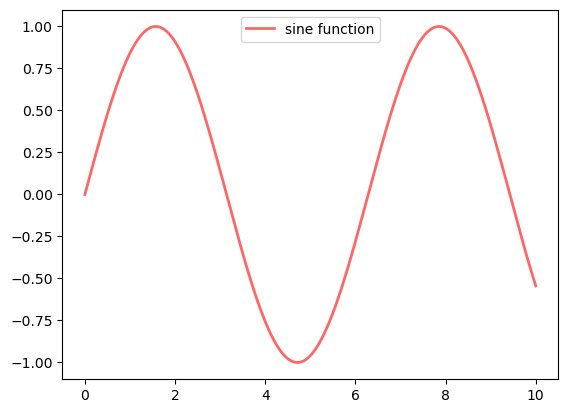
എല്ലാം ശരിയായി configure ചെയ്തിട്ടുണ്ടെങ്കിൽ, LaTeX ചേർക്കുന്നത് വളരെ എളുപ്പമാണ്:
fig, ax = plt.subplots()
ax.plot(x, y, 'r-', linewidth=2, label=r'$y=\sin(x)$', alpha=0.6)
ax.legend(loc='upper center')
plt.show()
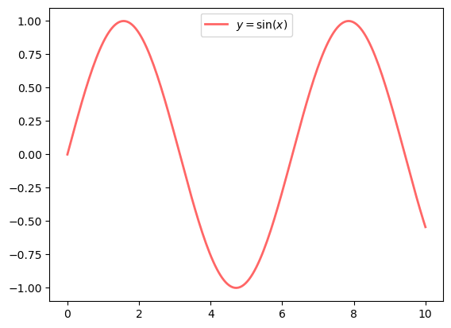
Ticks control ചെയ്യുന്നതും titles ചേർക്കുന്നതും മറ്റും അതുപോലെതന്നെ എളുപ്പം ആണ്:
fig, ax = plt.subplots()
ax.plot(x, y, 'r-', linewidth=2, label=r'$y=\sin(x)$', alpha=0.6)
ax.legend(loc='upper center')
ax.set_yticks([-1, 0, 1])
ax.set_title('Test plot')
plt.show()
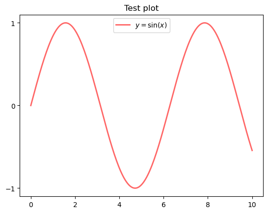
3.3. More Features#
Matplotlib-ൽ ധാരാളം functions-ഉം features-ഉം ഉണ്ട്. ആവശ്യം വരുന്ന മുറയ്ക്ക് കാലക്രമേണ അവയെ കണ്ടെത്താം.
അതിൽ ചിലത് മാത്രം ഇവിടെ പരാമർശിക്കുന്നു.
3.3.1. Multiple Plots on One Axis#
ഒരേ axes-ൽ multiple plots generate ചെയ്യുന്നത് വളരെ എളുപ്പമാണ്.
Randomly മൂന്ന് normal densities generate ചെയ്ത്, അവയുടെ mean-നൊപ്പം label ചേർക്കുന്ന ഒരു example താഴെ കാണാം:
from scipy.stats import norm
from random import uniform
fig, ax = plt.subplots()
x = np.linspace(-4, 4, 150)
for i in range(3):
m, s = uniform(-1, 1), uniform(1, 2)
y = norm.pdf(x, loc=m, scale=s)
current_label = rf'$\mu = {m:.2}$'
ax.plot(x, y, linewidth=2, alpha=0.6, label=current_label)
ax.legend()
plt.show()
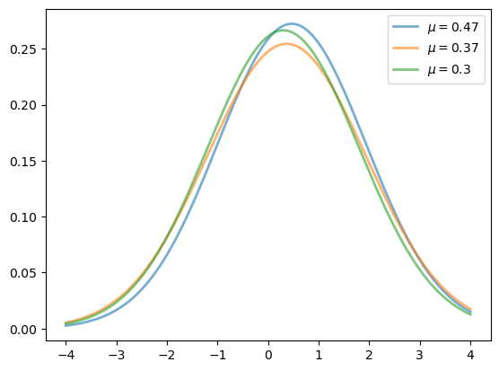
3.3.2. Multiple Subplots#
ചിലപ്പോൾ ഒരു figure-ൽ multiple subplots വേണ്ടിവരും.
6 histograms generate ചെയ്യുന്ന ഒരു example താഴെ കാണാം:
num_rows, num_cols = 3, 2
fig, axes = plt.subplots(num_rows, num_cols, figsize=(10, 12))
for i in range(num_rows):
for j in range(num_cols):
m, s = uniform(-1, 1), uniform(1, 2)
x = norm.rvs(loc=m, scale=s, size=100)
axes[i, j].hist(x, alpha=0.6, bins=20)
t = rf'$\mu = {m:.2}, \quad \sigma = {s:.2}$'
axes[i, j].set(title=t, xticks=[-4, 0, 4], yticks=[])
plt.show()
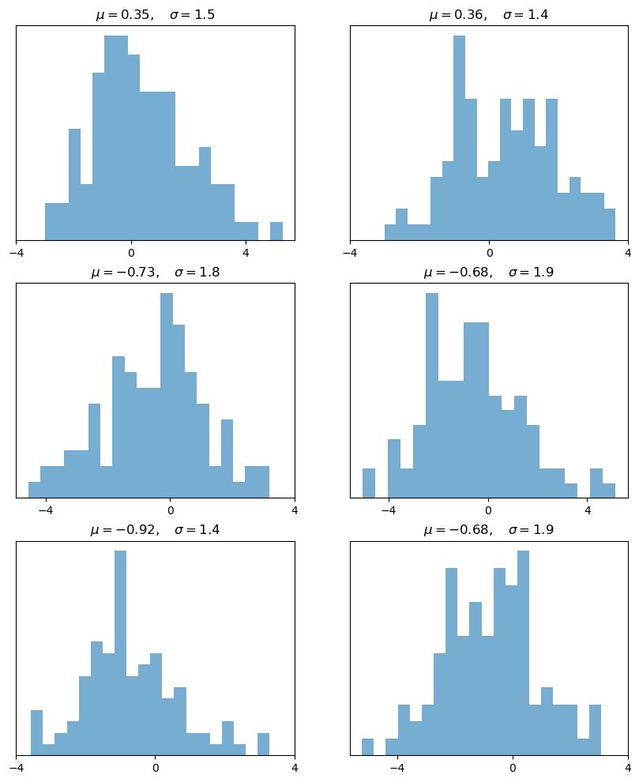
3.3.3. 3D Plots#
Matplotlib 3D plots വളരെ നന്നായി ചെയ്യുന്നു --- ഒരു example താഴെ കാണാം:
from mpl_toolkits.mplot3d.axes3d import Axes3D
from matplotlib import cm
def f(x, y):
return np.cos(x**2 + y**2) / (1 + x**2 + y**2)
xgrid = np.linspace(-3, 3, 50)
ygrid = xgrid
x, y = np.meshgrid(xgrid, ygrid)
fig = plt.figure(figsize=(10, 6))
ax = fig.add_subplot(111, projection='3d')
ax.plot_surface(x,
y,
f(x, y),
rstride=2, cstride=2,
cmap=cm.jet,
alpha=0.7,
linewidth=0.25)
ax.set_zlim(-0.5, 1.0)
plt.show()
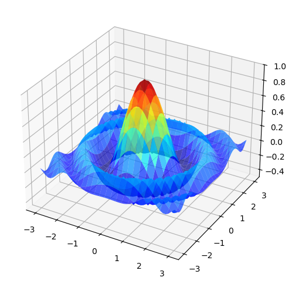
3.3.4. A Customizing Function#
ഒരുപക്ഷേ നിങ്ങൾ പതിവായി ഉപയോഗിക്കുന്ന ഒരു set of customizations ഉണ്ടാകും.
നമ്മുടെ axes origin-ലൂടെ കടന്നുപോകണമെന്നും, ഒരു grid ഉണ്ടാകണമെന്നും നമ്മൾ സാധാരണയായി prefer ചെയ്യുന്നു എന്ന് കരുതുക.
ഈ മാറ്റങ്ങൾ implement ചെയ്യുന്ന ഒരു custom subplots function object-oriented API ഉപയോഗിച്ച് എങ്ങനെ build ചെയ്യാം എന്നതിന് Matthew Doty-യുടെ ഒരു നല്ല example താഴെ കാണാം.
Code ശ്രദ്ധയോടെ വായിച്ച്, എന്താണ് നടക്കുന്നത് എന്ന് നിങ്ങൾക്ക് പിന്തുടരാൻ കഴിയുമോ എന്ന് നോക്കുക:
def subplots():
"Custom subplots with axes through the origin"
fig, ax = plt.subplots()
# Set the axes through the origin
for spine in ['left', 'bottom']:
ax.spines[spine].set_position('zero')
for spine in ['right', 'top']:
ax.spines[spine].set_color('none')
ax.grid()
return fig, ax
fig, ax = subplots() # Call the local version, not plt.subplots()
x = np.linspace(-2, 10, 200)
y = np.sin(x)
ax.plot(x, y, 'r-', linewidth=2, label='sine function', alpha=0.6)
ax.legend(loc='lower right')
plt.show()
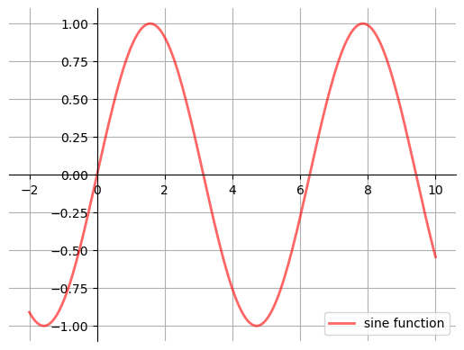
ഈ custom subplots function:
fig, axpair generate ചെയ്യാൻ internal ആയി standardplt.subplotsfunction-നെ call ചെയ്യുന്നു,ax-ന് വേണ്ട customizations വരുത്തുന്നു, കൂടാതെfig, axpair-നെ calling code-ലേക്ക് തിരികെ pass ചെയ്യുന്നു.
3.3.5. Style Sheets#
Matplotlib-ലെ മറ്റൊരു വളരെ useful ആയ feature ആണ് style sheets.
Uniform styles ഉള്ള plots create ചെയ്യാൻ നമുക്ക് style sheets ഉപയോഗിക്കാം.
plt.style.available എന്ന attribute print ചെയ്ത് ലഭ്യമായ styles-ന്റെ ഒരു list നമുക്ക് കണ്ടെത്താം:
print(plt.style.available)
['Solarize_Light2', '_classic_test_patch', '_mpl-gallery', '_mpl-gallery-nogrid', 'bmh', 'classic', 'dark_background', 'fast', 'fivethirtyeight', 'ggplot', 'grayscale', 'petroff10', 'seaborn-v0_8', 'seaborn-v0_8-bright', 'seaborn-v0_8-colorblind', 'seaborn-v0_8-dark', 'seaborn-v0_8-dark-palette', 'seaborn-v0_8-darkgrid', 'seaborn-v0_8-deep', 'seaborn-v0_8-muted', 'seaborn-v0_8-notebook', 'seaborn-v0_8-paper', 'seaborn-v0_8-pastel', 'seaborn-v0_8-poster', 'seaborn-v0_8-talk', 'seaborn-v0_8-ticks', 'seaborn-v0_8-white', 'seaborn-v0_8-whitegrid', 'tableau-colorblind10']
ഇനി style sheet set ചെയ്യാൻ plt.style.use() method നമുക്ക് ഉപയോഗിക്കാം.
ഒരു style sheet-ന്റെ name എടുത്ത്, ആ style-ൽ വ്യത്യസ്ത plots വരയ്ക്കുന്ന ഒരു function നമുക്ക് എഴുതാം:
def draw_graphs(style='default'):
# Setting a style sheet
plt.style.use(style)
fig, axes = plt.subplots(nrows=1, ncols=4, figsize=(10, 3))
x = np.linspace(-13, 13, 150)
# Set seed values to replicate results of random draws
np.random.seed(9)
for i in range(3):
# Draw mean and standard deviation from uniform distributions
m, s = np.random.uniform(-8, 8), np.random.uniform(2, 2.5)
# Generate a normal density plot
y = norm.pdf(x, loc=m, scale=s)
axes[0].plot(x, y, linewidth=3, alpha=0.7)
# Create a scatter plot with random X and Y values
# from normal distributions
rnormX = norm.rvs(loc=m, scale=s, size=150)
rnormY = norm.rvs(loc=m, scale=s, size=150)
axes[1].plot(rnormX, rnormY, ls='none', marker='o', alpha=0.7)
# Create a histogram with random X values
axes[2].hist(rnormX, alpha=0.7)
# and a line graph with random Y values
axes[3].plot(x, rnormY, linewidth=2, alpha=0.7)
style_name = style.split('-')[0]
plt.suptitle(f'Style: {style_name}', fontsize=13)
plt.show()
ചില styles എങ്ങനെയിരിക്കുമെന്ന് നമുക്ക് നോക്കാം.
ആദ്യം, seaborn എന്ന style sheet ഉപയോഗിച്ച് graphs വരയ്ക്കാം:
draw_graphs(style='seaborn-v0_8')
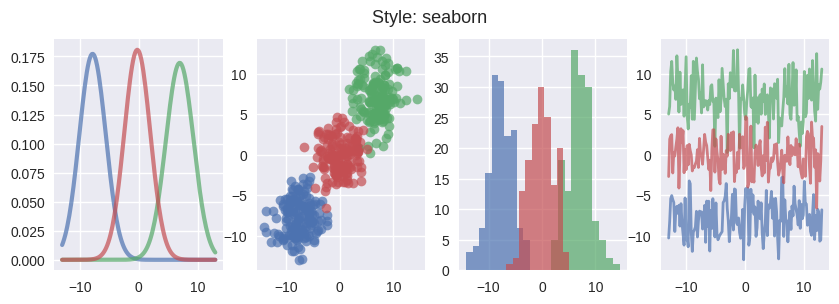
Plots-ലെ colors നീക്കം ചെയ്യാൻ നമുക്ക് grayscale ഉപയോഗിക്കാം:
draw_graphs(style='grayscale')
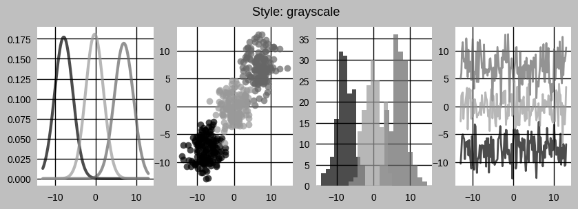
ggplot എങ്ങനെയിരിക്കുമെന്ന് താഴെ കാണാം:
draw_graphs(style='ggplot')
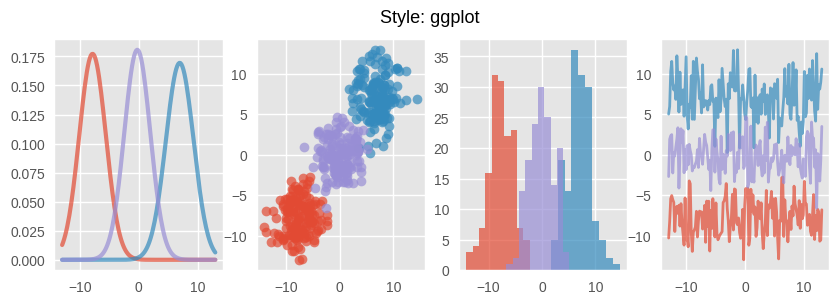
dark_background എന്ന style-ഉം നമുക്ക് ഉപയോഗിക്കാം:
draw_graphs(style='dark_background')
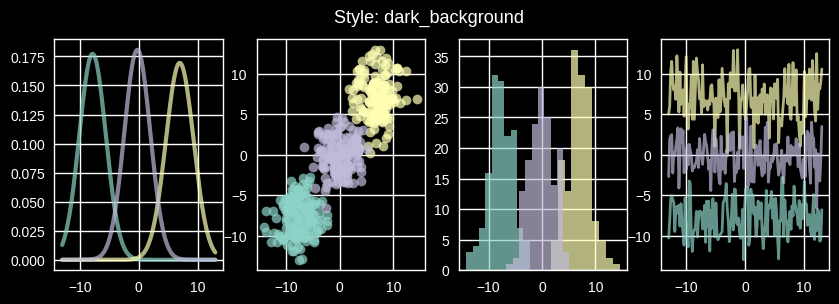
List-ലുള്ള മറ്റ് styles പരീക്ഷിക്കാൻ ഈ function നിങ്ങൾക്ക് ഉപയോഗിക്കാം.
താൽപ്പര്യമുണ്ടെങ്കിൽ, നിങ്ങൾക്ക് സ്വന്തമായി style sheets തന്നെ create ചെയ്യാം.
നിങ്ങളുടെ style sheets-ന്റെ parameters plt.rcParams എന്ന dictionary-like variable-ൽ ആണ് സൂക്ഷിച്ചിരിക്കുന്നത്:
print(plt.rcParams.keys())
നിങ്ങളുടെ style sheets-ന് വേണ്ടി set ചെയ്യാവുന്ന ധാരാളം parameters ഉണ്ട്.
നിങ്ങളുടെ style sheet-ന്റെ parameters ഇങ്ങനെ set ചെയ്യാം:
നിങ്ങളുടെ സ്വന്തം
matplotlibrcfile create ചെയ്ത്, അല്ലെങ്കിൽplt.rcParamsഎന്ന dictionary-like variable-ൽ സൂക്ഷിച്ചിരിക്കുന്ന values update ചെയ്ത്.
രണ്ടാമത്തെ method ഉപയോഗിച്ച് overlay ചെയ്ത density lines-ന്റെ style നമുക്ക് മാറ്റാം:
from cycler import cycler
# set to the default style sheet
plt.style.use('default')
# You can update single values using keys:
# Set the font style to italic
plt.rcParams['font.style'] = 'italic'
# Update linewidth
plt.rcParams['lines.linewidth'] = 2
# You can also update many values at once using the update() method:
parameters = {
# Change default figure size
'figure.figsize': (5, 4),
# Add horizontal grid lines
'axes.grid': True,
'axes.grid.axis': 'y',
# Update colors for density lines
'axes.prop_cycle': cycler('color',
['dimgray', 'slategrey', 'darkgray'])
}
plt.rcParams.update(parameters)
Note
ഈ settings global ആണ്.
.rcParams-ലെ parameters മാറ്റിയതിന് ശേഷം generate ചെയ്യുന്ന ഏത് plot-നെയും ഈ setting affect ചെയ്യും.
fig, ax = plt.subplots()
x = np.linspace(-4, 4, 150)
for i in range(3):
m, s = uniform(-1, 1), uniform(1, 2)
y = norm.pdf(x, loc=m, scale=s)
current_label = rf'$\mu = {m:.2}$'
ax.plot(x, y, linewidth=2, alpha=0.6, label=current_label)
ax.legend()
plt.show()
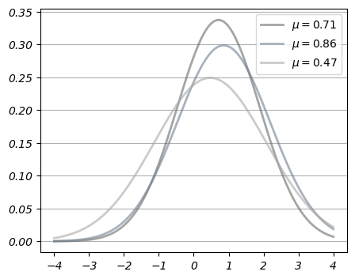
നിങ്ങളുടെ style-നെ വീണ്ടും default ആക്കി മാറ്റാൻ default style sheet ഒരിക്കൽ കൂടി apply ചെയ്യുക:
plt.style.use('default')
# Reset default figure size
plt.rcParams['figure.figsize'] = (10, 6)
3.4. Further Reading#
Matplotlib gallery ധാരാളം examples provide ചെയ്യുന്നു.
Nicolas Rougier, Mike Muller, Gael Varoquaux എന്നിവരുടെ ഒരു നല്ല Matplotlib tutorial.
mpltools plot styles-ന് ഇടയിൽ എളുപ്പത്തിൽ switch ചെയ്യാൻ അനുവദിക്കുന്നു.
Seaborn Matplotlib-ൽ common statistics plots-നെ സഹായിക്കുന്നു.
3.5. Exercises#
Exercise 3.1
Plot the function
over the interval \([0, 5]\) for each \(\theta\) in np.linspace(0, 2, 10).
Place all the curves in the same figure.
The output should look like this
{kind=link}
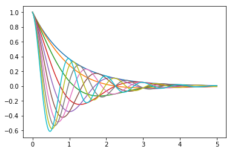
Solution
Here's one solution
def f(x, θ):
return np.cos(np.pi * θ * x ) * np.exp(- x)
θ_vals = np.linspace(0, 2, 10)
x = np.linspace(0, 5, 200)
fig, ax = plt.subplots()
for θ in θ_vals:
ax.plot(x, f(x, θ))
plt.show()
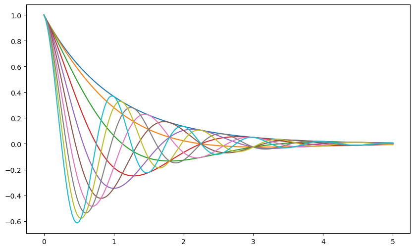